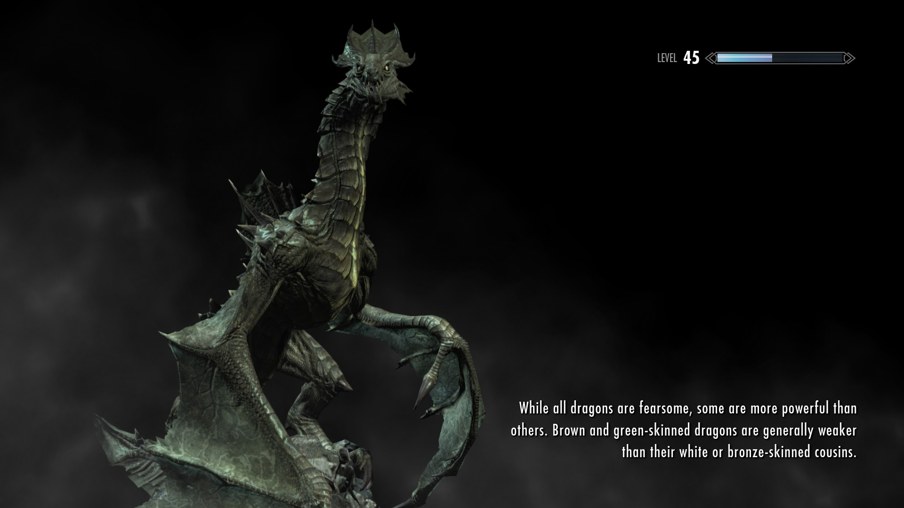
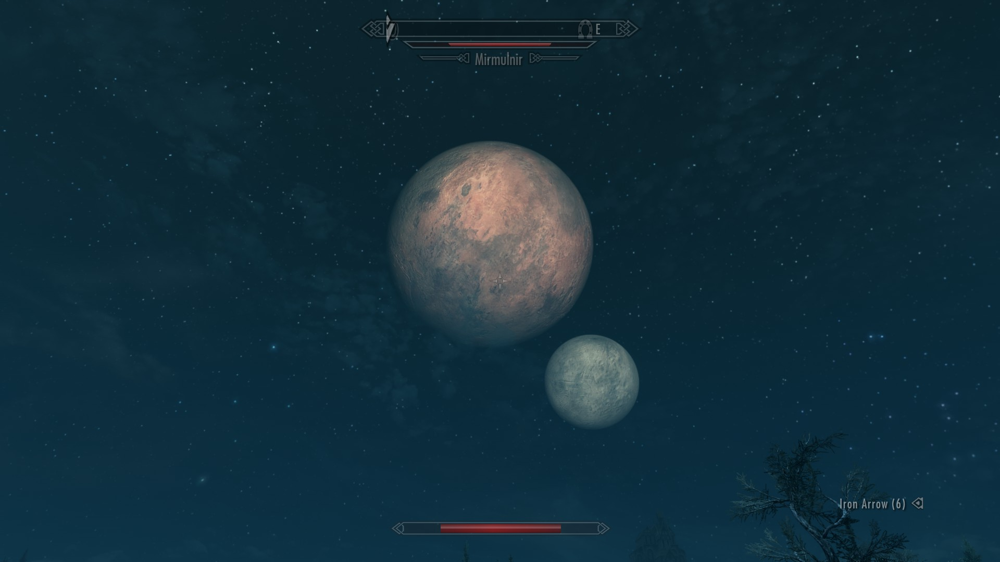
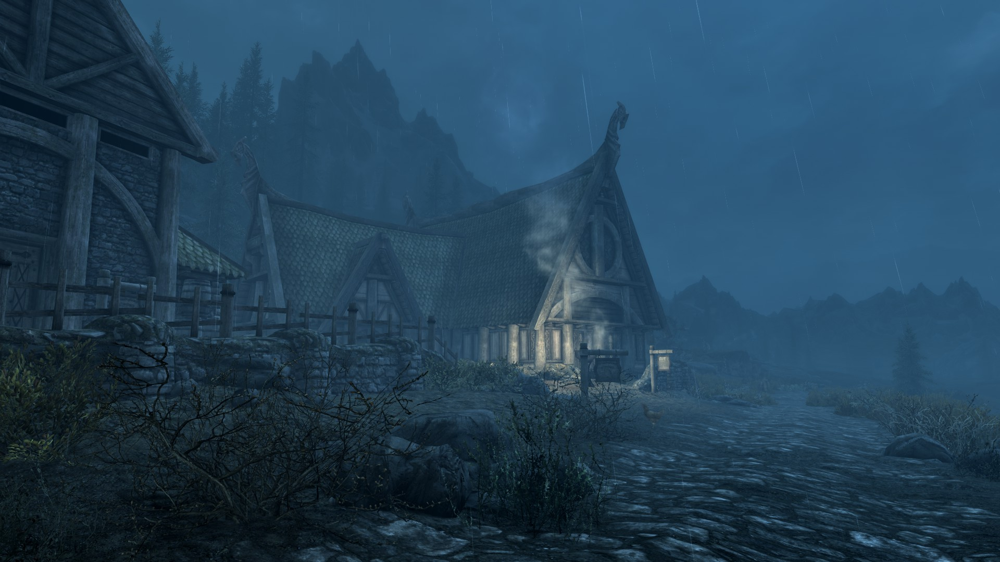
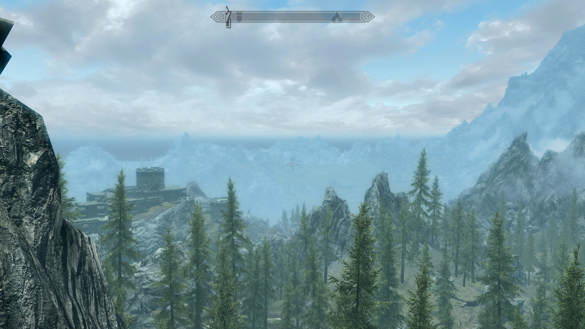

This page will give you a glimpse into the fantastical things you can find in the province of Skyrim. Tamriel has many wonders, but few can compete with the majesty of Skyrim's forsts, its dancing auroras, and most of all, its dragons!
Here, you can find a selection of Skyrim screenshots wherein I captured the likenesses of several species of dragon.
Tamriel has two moons, known as Jone and Jode. Sometimes, they even align in the sky, but here we can see them in all their glory. There are even some auroras dancing with them in the second image!
Honningbrew Meadery is but one of the favorite local hangouts. Sabjorn's mead is among Skyrim's most purchased meads, and despite its sweet flavor, its a strong spirit indeed!
Lastly, a picture of one of Skyrim's many everygreen forests. Use caution when wandering among the trees, however. Skyrim is rife with wolves, bears, trolls, and even spriggans!
The Elder Scrolls V: Skyrim was published on November 11, 2011 and has since become a popular fantasy title for gamers craving adventure. Some of its bugs and glitches have become so iconic that they've evolved into long-standing Internet jokes (Skyrim horse, anyone?), but it is nonetheless a beloved game that, at least for me, will always have a special place in my heart. And my Steam library.
If you would like to play The Elder Scrolls V: Skyrim for yourself, check it out on Steam!
If you would like to learn about Skyrim's creators,as well as other games they've made, you can read up on Bethesda Softworks on their website!